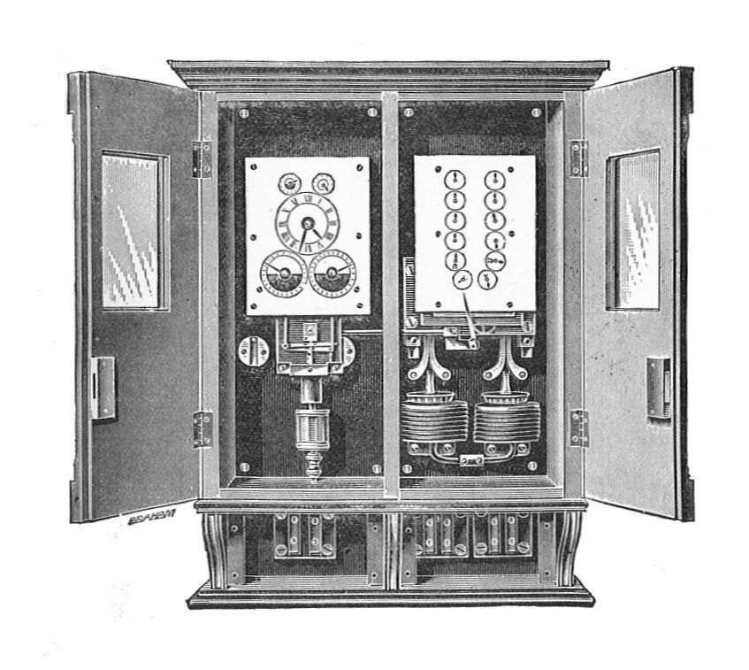

Москва · вторникВыпуск из Москвы и из-под землиЦена: бесплатно
TheSéance Times
газета для тех, кто разговаривает с прошлым
№ 007 · 3 ноября 2026Седьмой выпускЧтение: 13 минут
Машина · главное
Счётчик на две ставки
Гэрри Тан, исполнительный директор Y Combinator, в подкасте Уолтера Айзексона назвал свою цену привычки: от ста до двухсот тысяч долларов в год на токены. Он же первый и сказал, что это «безумная привилегия». Разбираем, за что именно платят такие деньги — и сколько из этого счёта оплачивает не работа, а память.
Событие — 3 ноября 2026 · The Builders, TechCrunch · 6 минут
Фразу он произнёс спокойно, как называют расходы на бензин. «Я трачу, наверное, от ста до двухсот тысяч долларов в год на токены», — сказал Гэрри Тан в новом эпизоде подкаста The Builders у Уолтера Айзексона; эпизод выходит во вторник, TechCrunch пересказал его накануне. Проценты, которые он получает с этой суммы, звучат куда страннее, чем сама сумма: агент читает его почту, весь Dropbox, все заметки в Apple Notes — «даже мои записи с терапии за двадцать лет».
Второй пример он приводит из офиса. У Y Combinator теперь есть внутренний агент по имени Stray Light: у него, по словам Тана, есть характер и есть «мозг компании» — весь контекст основателей, которых фонд когда-либо поддерживал, всех, кто когда-либо писал им письмо, все заявки. Это уже не помощник в отдельной задаче, а второй, параллельный архив организации, который можно спросить.
Пересчитаем в сутки. Сто тысяч в год — это 274 доллара в день, двести тысяч — 548. В месяц — примерно 8 300 и 16 700. Цифры важны не сами по себе, а как единица измерения: это цена не за ответы, а за право спрашивать часто. Один удачный вопрос стоит центы; тысяча вопросов к одному и тому же длинному контексту стоит как подержанная машина, потому что каждая сессия заново перечитывает историю переписки, и платит за это владелец.

Счётчик на две ставки: двухтарифный электросчётчик GEC из книги Рэнкина Кеннеди «Electrical Installations», том II, 1909 год. Общественное достояние, Wikimedia Commons.
Отсюда — единственный технический вывод, который в этом сюжете стоит денег. Счёт растёт не от сложности задач, а от объёма контекста, умноженного на частоту. Провайдеры это знают и продают ровно то, что болит: чтение из кэша идёт за десятую часть цены входа, а запись в кэш имеет срок годности и стоит тем дороже, чем дольше живёт. Кто гоняет один и тот же системный промпт с документами каждые десять минут — платит за кэш; кто каждый раз собирает контекст заново — платит за вход; кто держит в контексте полгода переписки ради одной справки — платит как Тан.
И ещё одно наблюдение, которое Тан сформулировал против собственной аудитории. Он не советует обращаться с агентом как с обычным софтом: погоня за повторяемостью и безопасностью, по его словам, отнимает «все прекрасные части» работы с системой, которая ведёт себя почти как человек. Совет спорный — предсказуемость и есть то, за что платят в промышленной разработке, — но в нём есть честная деталь: агент окупается там, где вы готовы доверить ему не задачу, а распорядок.
Цитата«I spend about maybe $100[,000] to $200,000 a year on tokens» — Гэрри Тан, The Builders (Уолтер Айзексон).
Арифметика100 тыс. в год — 274 $ в день и ~8 300 $ в месяц; 200 тыс. — 548 $ в день и ~16 700 $ в месяц.
Что читаетПочта, Dropbox, Apple Notes, записи с терапии за двадцать лет — по словам самого Тана.
Внутри YCАгент Stray Light: «характер» плюс «мозг компании» — контекст всех основателей и всех заявок.
Открытый код23 навыка для Claude Code под общим именем gstack, выложены на GitHub.
Его оценка«It’s too expensive right now» и «a crazy privilege that not everyone can do».
Что здесь факт, а что — обещание
Факт: прозвучавшая в эфире цифра и её формулировка, название подкаста и дата выпуска эпизода, существование набора gstack из 23 навыков, описание внутреннего агента YC и собственные оговорки Тана о дороговизне.
Не факт: что 100–200 тысяч — типичная цена для практикующего пользователя. Это верхняя граница рынка, и Тан сам называет её привилегией. Не проверено и то, что агент действительно прочитал всё перечисленное: это его слова о собственной настройке, а не аудит доступа. Чего нет: разбивки расходов по моделям и провайдерам — то есть мы знаем счёт, но не знаем, из чего он сложился.
Агент не покупается — он содержится. Разница между игрушкой и привычкой ровно в том, сколько раз в день вы перечитываете собственный контекст.
Редакционный вывод
Практическая часть для того, кто платит из своего кармана. Первое: считать не задачи, а часы — сколько времени в сутки агент работает с длинным контекстом. Второе: разделять две роли. Мелкая работа — чистка текста, извлечение фактов, короткие правки — должна уходить на дешёвую модель с коротким контекстом; длинные цепочки и разбор кода — на старшую, но редко. Третье: кэш включать осознанно, потому что он экономит десятки процентов ровно там, где вы ходите по одному и тому же маршруту, и не экономит ничего там, где каждый запрос уникален.
И последнее, что стоит запомнить из этого эпизода. Человек, который доверил агенту двадцать лет собственных записей с терапии, всё равно говорит о цене как о проблеме, которую должно решить не его личное благоразумие, а рынок. Пока рынок не решил, счётчик стоит на две ставки: одна — за токены, вторая — за то, что вы позволили системе знать о себе больше, чем помните сами.
Книги
Второй материал · 5 минут
Сорок лет до первой книги
Агнес Оуэнс родила семерых, работала машинисткой, на фабрике и уборщицей, а первую книгу выпустила в пятьдесят восемь. Её повесть «Работающая мать» переиздали в октябре — и это самый честный хоррор сезона, без единого привидения.
Издание — 6 октября 2026 · McNally Editions, Lit Hub · 5 минут
«Close, No. 61, Saltmarket»: Томас Аннан, Глазго, конец 1860-х, из серии «Старые переулки и улицы Глазго» — дворы, в которых жила та самая работающая Шотландия. Общественное достояние, Wikimedia Commons.
Биография Агнес Оуэнс (1926–2014) звучит как отказ от литературной карьеры, написанный заранее. Семеро детей, два брака, работа машинисткой, на фабрике, уборщицей. В школе её считали безнадёжной. Первый муж — ветеран войны с травмой, которую он лечил алкоголем; после его смерти в сорок три года она осталась с четырьмя детьми. Первую книгу, Gentlemen of the West, она выпустила в 1984 году, в пятьдесят восемь лет, — и попала туда, куда не попадают по расчёту.
Нашёл её не редактор и не агент, а три писателя, зашедшие в районный литературный кружок: Джеймс Келман, Аласдер Грей и Лиз Локхед. Оуэнс потом говорила, что пошла в кружок, чтобы выйти из дома. Келман остался её главным литературным родственником — оба писали шотландский рабочий класс и оба отказывались считать собственную биографию экзотикой для читателя. «Моё происхождение так же нормально или ненормально, как любое другое», — сформулировал он.
«Работающая мать» вышла в 1994-м, через семь лет после того, как её сына Патрика убили у дома: ему было девятнадцать. Книга во многом автобиографична, и это видно по фактуре, а не по признаниям. Бетти живёт с мужем Адамом, которого война оставила с травмой и тягой к бутылке; ночью он ползёт по кровати на четвереньках, отсыпаясь от воспоминаний. Двое детей. Работа машинисткой в юридической конторе — единственный выход наружу, и там Бетти знакомится с Май, матерью-одиночкой, для которой уже сама её ситуация скандальна.
Формально Оуэнс пишет короткими, почти афористичными фразами — критика сравнивает её с Гертрудой Стайн, и это не комплимент за стиль, а описание метода: простота сначала кажется бедностью, а потом оказывается точностью. Разговоры Бетти и Адама устроены как дуэт в мюзик-холле, где каждый куплет — признание в безнадёжности, произнесённое с удовольствием. «Я нашла работу», — говорит она. «Молодец. Значит, я могу сложить с себя всю ответственность за этот дом?» — «И я смогу накопить на развод». — «Тогда отпразднуем».
Переиздание сделала McNally Editions — пятьдесят шестая книга серии, вышла 6 октября 2026 года, 176 страниц, 18 долларов, мягкая обложка с клапанами; предисловие написала ирландская романистка Меган Нолан. В её эссе есть фраза, которая объясняет, зачем это читать сегодня: Оуэнс нашла новый способ передать «сюрреалистичность повседневной жизни». Именно так: ужас здесь не приходит извне, он в том, что дети кричат над тарелкой чипсов без соуса, а муж ночью ползёт по постели, и завтра будет то же самое.
ДебютGentlemen of the West, 1984 — в пятьдесят восемь лет, после литературного кружка.
ИзданиеMcNally Editions № 56, 6 октября 2026: 176 с., 18 $, мягкая обложка с клапанами, ISBN 9781968671372.
ПредисловиеМеган Нолан, автор «Acts of Desperation» и «Ordinary Human Failings».
ФонСын писательницы Патрик убит в 1987 году в девятнадцать лет; книга вышла в 1994-м.
Инструментарий
Права · 2 ноября
Индекс как товар
The Verge · 2 ноября 2026
Второго ноября The New York Times и ещё несколько изданий подали иски против Brave Software — компании, которая делает браузер Brave. Претензия не к рекламе и не к приватности, а к товару, который почти никто не видит: индексу. По версии истцов, Brave продаёт ИИ-компаниям платный доступ к «онлайн-контенту из индекса Brave в реальном времени», а те используют его для обучения моделей, для ответов на запросы пользователей или для того и другого сразу.
В жалобе, поданной New York Daily News, Chicago Tribune и Orlando Sentinel, перечислены получатели: Anthropic, Perplexity, Mistral, xAI, Cohere. Отдельный пункт — функция «Paywall blocker» в браузере, которая, как утверждается, открывает «сотни ведущих издателей» в обход подписки. Формулировка иска сухая и от этого тяжёлая: Brave никогда не спрашивала разрешения у издателей, более того, сама позволяла пользователям обходить их платежные стены и принимала меры, чтобы издатели не могли закрыть ей доступ.
Кто истцыNew York Daily News, Chicago Tribune, Orlando Sentinel; The New York Times — отдельно, вместе с группой изданий.
Что продаётсяПлатный доступ к индексу Brave для ИИ-компаний, в том числе в реальном времени.
Кого назвалиAnthropic, Perplexity, Mistral, xAI, Cohere — как получателей контента.
Вторая претензияФункция обхода платных стен, рекламируемая как доступ к «сотням ведущих издателей».
Практический вывод для того, кто публикует тексты сам. Индекс — это не поиск, это склад, и на складе ваш роман и ваш блог лежат в одном ящике с чужими новостями. robots.txt на таком складе работает как объявление, а не как замок: прошлый выпуск был про то, как отрасль договаривается о вежливой строке в этом файле, — и вот иск, который показывает цену вопроса. Издательская позиция, которая пока выглядит рабочей, проста: либо текст закрыт и продаётся по лицензии, либо он открыт и его читают все, включая тех, кто пересказывает его вашими же словами.
Тело
Медицина · 2 ноября
Молекула из другой болезни
FEBS Open Bio · 2 ноября 2026
Второго ноября Королевский колледж Лондона сообщил о препарате KCL-286, который в мышиной модели болезни Альцгеймера уменьшил повреждение ДНК в нейронах и воспаление в мозге. Работа опубликована в FEBS Open Bio (DOI 10.1002/2211-5463.70284), и её главная особенность — не результат, а происхождение молекулы: KCL-286 разрабатывали для травм спинного мозга.
Механизм другой, чем у привычных средств. Большая часть терапии Альцгеймера бьёт по амилоиду и тау — белкам, которые слипаются в бляшки и клубки; такие лекарства дают скромный, но измеримый эффект и не трогают остальные процессы. KCL-286 — агонист ретиноевого рецептора RARβ, «первый в своём классе»; он работает с двумя ранними процессами сразу: чинит разрывы ДНК и снимает воспаление. Это не симптоматика, а попытка вмешаться в механизм, — и именно так это описывает руководитель работы, профессор Джонатан Коркоран.
Второй довод — календарь. Молекула уже прошла первую фазу клинических испытаний на безопасность и переносимость у людей, когда разрабатывалась по другому показанию. Это сокращает путь к следующим фазам на годы, а не на месяцы, и одновременно ставит главный вопрос: переносимость в первой фазе проверяли на других пациентах и по другой схеме.
ЧтоKCL-286 — пероральный низкомолекулярный агонист RARβ, первый в классе.
ГдеKing’s College London, Институт психиатрии, психологии и нейронаук.
ПубликацияFEBS Open Bio, 2026, DOI 10.1002/2211-5463.70284.
Что показаноВ мышиной модели: меньше повреждений ДНК в нейронах, меньше воспаления.
Чего не показаноЭффективности у людей при Альцгеймере: первая фаза пройдена по другому показанию.
Честная оговорка, которую надо держать в голове: мышиная модель — это не болезнь, а её имитация, и половина препаратов, работающих на мышах, не доходит до аптеки. Ценность этой публикации не в надежде, а в направлении: если раннее повреждение ДНК и воспаление действительно можно лечить одной молекулой, то Альцгеймер перестаёт быть историей про один белок.
Небо
Физика · 2 ноября
Призрак, пойманный льдом
Нобелевская премия · 2026
Нобелевская премия по физике 2026 года вручена Фрэнсису Халцену — одному, вся премия. Формулировка: «за решающий вклад в создание нейтринной обсерватории IceCube и открытие нейтрино высокой энергии астрофизического происхождения». Обсерватория — кубический километр антарктического льда на Южном полюсе, в который на глубину от полутора до двух с половиной километров вморожены тысячи оптических модулей: лёд сам по себе служит и мишенью, и рабочим телом детектора.
Ловят там частицы, которые почти невозможно остановить. Нейтрино не имеют заряда, их масса, по оценкам, может быть примерно в десять миллионов раз меньше массы электрона, и они проходят сквозь Землю так, будто её нет. Именно поэтому они и нужны: они выходят из областей, откуда не выходит свет — из окрестностей коллапсирующих звёзд и чёрных дыр — и приносят информацию, которую другим излучением не получить.
Цифры, ради которых стоит читать этот сюжет. Некоторые нейтрино сверхвысоких энергий, пойманные IceCube, несут примерно в десять миллиардов раз больше энергии, чем типичное нейтрино от Солнца. А один аппарат, похожий на IceCube, зафиксировал событие ещё в двести раз мощнее — и откуда оно пришло, до сих пор неизвестно. По данным Калифорнийского университета в Сан-Диего, с этими частицами так или иначе связаны пять Нобелевских премий по физике; нынешняя — из их числа.
Лаборатория IceCube, Южный полюс: над снегом — только вычислительный центр; сам детектор на полтора-два с половиной километра вморожен в лёд. Фото: Кристофер Мишель, CC BY-SA 4.0, Wikimedia Commons.
Отдельно стоит сказать про слово «призрак», которое физики употребляют без всякой мистики: нейтрино взаимодействует через слабую силу, которая примерно на двадцать порядков слабее электромагнетизма, — поэтому событие в детекторе это редкость, ради которой строят кубический километр. Газета о разговорах с прошлым не может пройти мимо такой детали: самый надёжный способ поймать неуловимое — сделать мишень размером с ледник и ждать.
Звук
Музыка · 2 ноября
Плёнка из благотворительной лавки
Nettwerk · 2 ноября 2026
История, которая могла кончиться в 2001 году и не кончилась. Панчико из Ноттингема записали альбом D>E>A>T>H>M>E>T>A>L подростками, разошлись и исчезли. Годы спустя копия диска всплыла в благотворительном магазине, попала в музыкальные сообщества в сети — и группа, которую никто не искал, собралась снова и теперь играет для залов, каких у неё не было никогда.
Второго ноября объявлен американский тур 2027 года: с 13 апреля в Сан-Антонио до 15 мая в Месе, через Нью-Йорк, Филадельфию, Бостон, Денвер, Сиэтл и Инглвуд. Билеты — с 6 ноября, в десять утра по местному времени. Повод — альбом Chimera, который выходит 9 апреля на Nettwerk; первый сингл «One Car Hits Another» записан с Мэй Семонес, а клип вышел на хэллоуинские выходные и, разумеется, снят со скелетом в стоп-моушене.
АльбомChimera, 9 апреля 2027, лейбл Nettwerk.
Тур13 апреля — 15 мая 2027: Сан-Антонио, Нью-Йорк, Филадельфия, Бостон, Денвер, Сиэтл, Инглвуд, Меса.
БилетыС 6 ноября, 10:00 по местному времени, Ticketmaster.
СоставЭнди Райт и Оуэйн Дэвис из первого состава, с ними Роберт Харрис, Шон Ферридей, Джон Неллен.
Почему это не просто новость про тур. Панчико — редкий случай, когда архив восстановился не благодаря лейблу, а вопреки ему: носитель нашёлся случайно, слушатели опознали группу по фотографии, и дальше всё сделала сеть. Ровно тот механизм, которого не хватает машинам из главного материала: там индекс продают, здесь пластинку нашли в лавке и вернули авторам. Пока что это работает — по крайней мере, до 15 мая 2027 года.